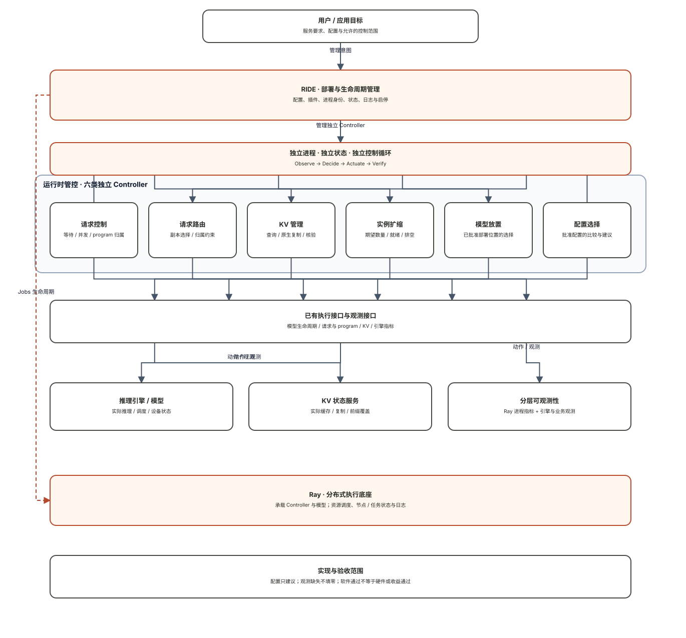
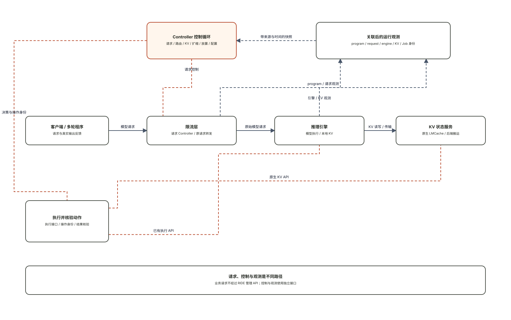

Jobs / actors, resource scheduling, node and task state, and logs. These do not establish request dependencies, reusable cache, or policy benefit.
RIDE / SYSTEM ARCHITECTURE
Distributed execution.
Independent control.
Ray executes distributed processes. RIDE manages deployment and lifecycle. Independent controllers run control loops. Business and engine observations supply the program, KV, and policy semantics that Ray does not provide.
Load configuration and plugins, launch independent services through an executor, and track exact identity, status, logs, and lifecycle. The management API is outside the model request path.
Observe → decide → actuate → verify. Request and KV control are event-driven; scaling can reconcile periodically. Routing and placement run on demand; configuration selection is advisory.
01 / System layers
Logical responsibilities. Ray is the execution substrate for distributed controllers and model services. RIDE also retains explicit CPU local deployment; local validation does not establish distributed Ray acceptance.

02 / Three separate paths
Solid lines represent model requests; orange dashed lines represent control; gray dashed lines represent observations. A controller may be on or off the request path, but every effect needs its own verification.

03 / Ownership & coordination
Routing proposes candidate order. The request controller alone owns slots, program affinity, and forwarding. Job identity is checked before reservation; continuations retain affinity.
Scaling decides replica count; placement selects an approved bound profile. RIDE launches it and Ray schedules it. A placement proposal is not a resource reservation.
After programs finish and release, resolve KV operations before exact-job stop. Configuration selection only recommends; it does not concurrently rewrite other controllers' state.
Official contracts & boundaries
Ray resources are logical scheduling resources, not automatic physical-device isolation. State, logs, and metrics do not by themselves establish business causality. These official docs explain responsibilities; deployment qualification uses the actual installed version.
Acceptance boundary: software interfaces and call paths checked. The new six-plugin cloud lifecycle, real models, physical KV, and performance need actual receipts. A valid diagram is not system acceptance.